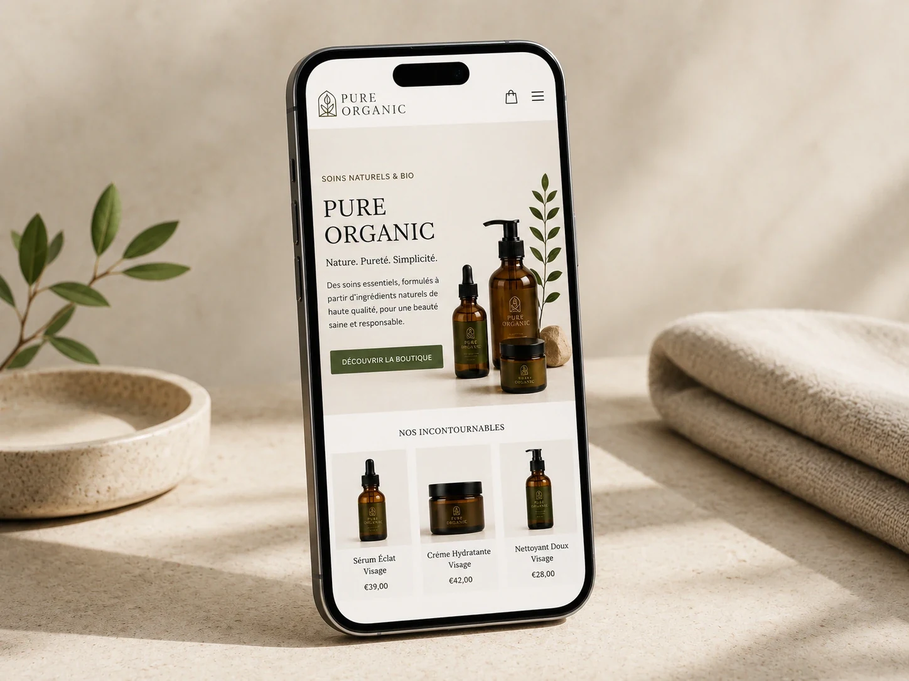
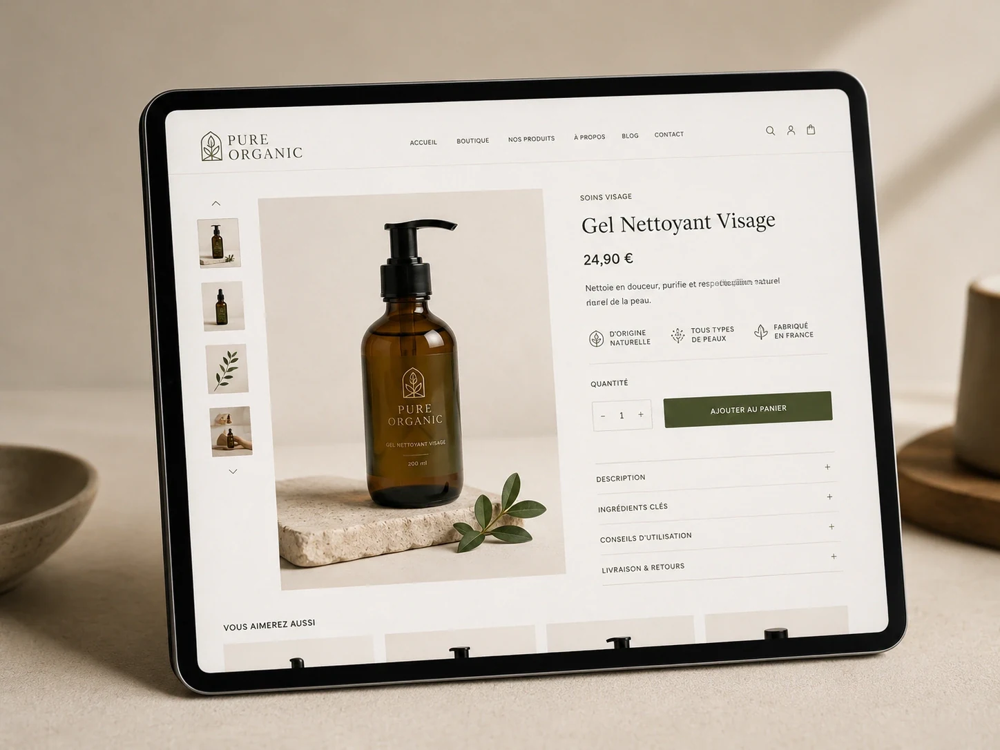
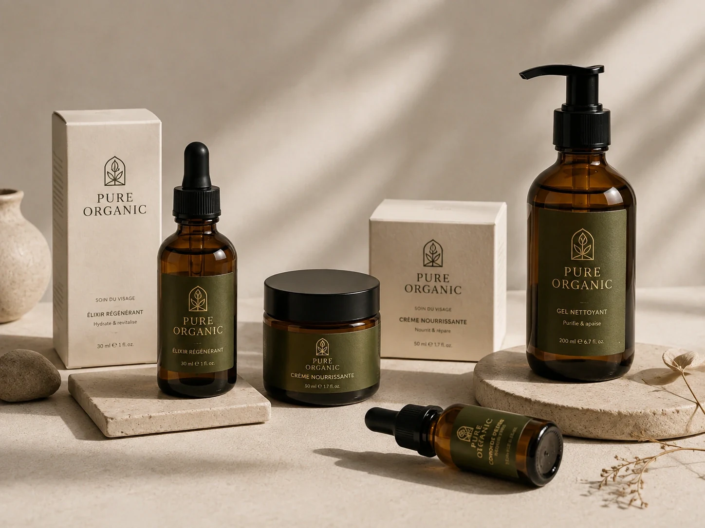

01
Challenge
Make a natural skincare brand feel trustworthy and premium while keeping the buying journey clear on both desktop and mobile.
A calm, premium skincare identity expressed across desktop shopping, mobile browsing, product pages and real packaging — all within one coherent visual language.

Concept study created to demonstrate MAQTA’s art direction and production applications.
Make a natural skincare brand feel trustworthy and premium while keeping the buying journey clear on both desktop and mobile.
A soft editorial aesthetic, natural tones and strong product hierarchy balance brand emotion with practical e-commerce usability.
Desktop website, mobile experience, product page, purchase journey, packaging and labels are developed as one visual system.
A concept system that connects digital and physical touchpoints, so the brand seen on screen still feels consistent when the product reaches the customer.
WEBSITE · MOBILE · PRODUCT PAGE · PACKAGING


